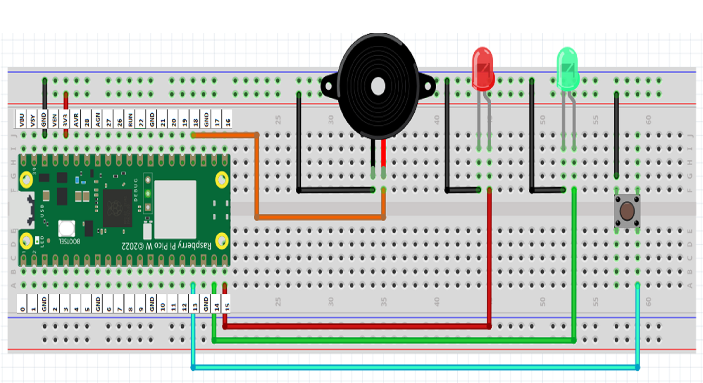

The Toolkit
You will need:
- Raspberry Pi Pico W
- 1x Red LED & 1x Green LED
- Breadboard & Jumper Wires
- Push Button & Buzzer
💡 Wire Layout:
• Red LED: Pin GP15
• Green LED: Pin GP14
• Button: Pin GP13
• Buzzer: Pin GP18
Wiring Diagram Reference

Wiring diagram (beginners.png) not found.
Important: You will need to install the picozero library using the Package Manager (usually found in Tools > Manage Packages in Thonny), if you haven't got it in your Pico W library yet.
Exercise 1: Red Light, Green Light
Let's make our Red LED blink while keeping the Green LED off.
Wiring Guide:
- Red LED: Long leg to GP15
- Green LED: Long leg to GP14
- Short Legs: Connect both short legs directly to any GND pin.
View MicroPython Code
from picozero import LED
from time import sleep
red = LED(15)
green = LED(14)
while True:
red.on()
sleep(1)
red.off()
sleep(1)🌟 Try This: Can you make them alternate? Turn Red on, wait, turn Red off and Green on, wait, and repeat!
Exercise 2: Dimming the Green LED
Let's make the Green LED glow softly using PWM.
View MicroPython Code
from picozero import LED
from time import sleep
green = LED(14)
while True:
green.brightness = 0.2 # Dim
sleep(1)
green.brightness = 1.0 # Full power!
sleep(1)🌟 Try This: Use green.pulse() to make it fade in and out like it's breathing.
Exercise 3: Toggle Switch
Use a button to switch between the Red and Green lights.
Wiring the Button:
Connect one side of the button to GP13 and the other side to GND.
View MicroPython Code
from picozero import LED, Button
from signal import pause
red = LED(15)
green = LED(14)
button = Button(13)
def switch_lights():
red.toggle()
green.toggle()
# Start with Red on
red.on()
green.off()
button.when_pressed = switch_lights
pause()Exercise 4: The Warning Buzzer
Buzzers are perfect for adding audio alerts to your hardware.
View MicroPython Code
from picozero import Buzzer
from time import sleep
buzzer = Buzzer(18)
# Beep 3 times quickly
buzzer.beep(on_time=0.1, off_time=0.1, n=3)The Smart Doorbell
A button that rings the buzzer and flashes the Red light to get your attention!
View Code
from picozero import LED, Button, Buzzer
from signal import pause
red = LED(15)
button = Button(13)
buzzer = Buzzer(18)
button.when_pressed = lambda: (red.on(), buzzer.on())
button.when_released = lambda: (red.off(), buzzer.off())
pause()Final Challenge: Pedestrian Crossing
Imagine a road where the light is always Green for cars. When a pedestrian (you) presses the Button, the light should turn Red, the Buzzer should beep to say "Walk Now," and then return to Green.
The Logic:
- Normal State: Green LED is ON, Red LED is OFF.
- When button pressed: Green turns OFF, Red turns ON.
- Buzzer beeps for 5 seconds while Red is ON.
- Switch back: Red OFF, Green ON.
💡 Wait! Challenge yourself—try building the code yourself before succumbing to "View Solution Code" :-)
View Solution Code
from picozero import LED, Button, Buzzer
from time import sleep
red = LED(15)
green = LED(14)
button = Button(13)
buzzer = Buzzer(18)
while True:
# 1. Normal State
green.on()
red.off()
# 2. Wait for pedestrian
print("Waiting for pedestrian...")
button.wait_for_press()
# 3. Stop the cars!
print("Stop! Pedestrian crossing...")
green.off()
red.on()
# 4. Beep while they walk
buzzer.beep(on_time=0.2, off_time=0.2, n=10)
sleep(2) # Extra time to cross
# Loop back to Green🎉 Congratulations!
You've built your very first automated traffic system.